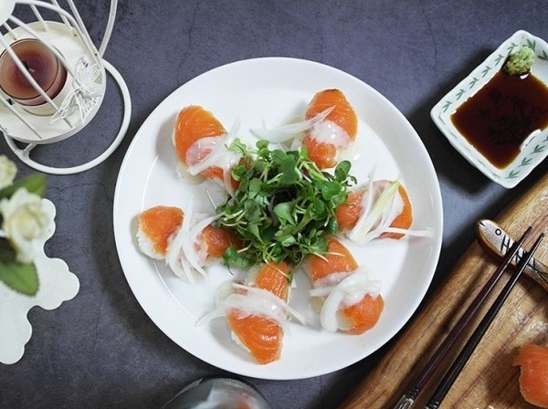

연어스시
재료 : 훈제연어 150g, 밥 한 공기, 식초 2스푼(밥 숟가락), 설탕 1스푼, 소금 1/4T(계량스푼), 홀스레디쉬소스(타르타르소스), 양파 1/2개, 생와사비 1/2스푼
- 양파를 채썰어 주고 매운맛을 빼기 위해 찬물에 5분 정도 담가둡니다.
- 양파를 건져 낸 후 체에 받쳐 물기를 빼주세요.
- 넓은 볼에 분량의 설탕, 식초, 소금을 넣고 잘 섞어줍니다. 다 녹지 않아도 괜찮아요.
후에 뜨거운 밥을 넣으면 덜 녹은 설탕과 소금이 녹게 됩니다.
- 뜨거운 밥을 단촛물이 담긴 볼에 넣고 잘 비벼 주세요.
- 초밥틀에 물을 바르고 숟가락으로 밥을 떠서 담은 뒤 꾹 눌러서 초밥 모양으로 단단하게 밥을 뭉쳐줍니다.
초밥틀은 만들 때마다 물에 담갔다 빼야 밥알이 잘 떨어져서 초밥 모양을 예쁘게 만들 수 있습니다.
- 초밥 모양 위에 생와사비 소량을 올리고 연어를 올려줍니다.
- 타르타르소스를 연어 위에 뿌리고 채 썬 양파도 올려주세요.